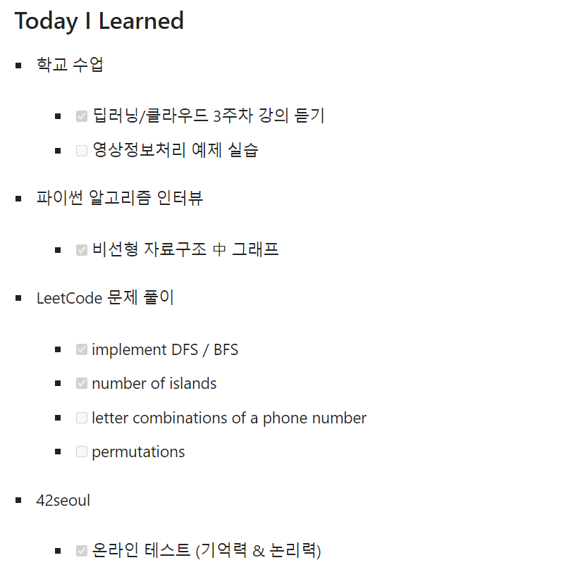
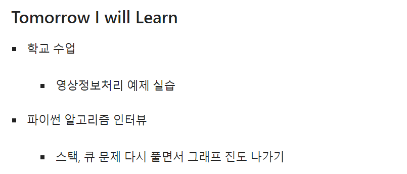

Restart
올해 7월 14일부터 이전 블로그에 TIL을 작성하기 시작했다. 그곳에서의 기록이 9월 19일에 멈췄기 때문에 3주 정도 TIL 작성을 쉬었다. 원래 이 블로그를 만들자마자 다시 시작할 계획이었는데 이런 저런 핑계로 미루게 되었다. 추석 연휴도 끝났으니 더는 미루면 안되겠다고 판단했다.
TIL 규칙 정하기
기존에 나는 아래 사진처럼 Today I Learned / Tomorrow I will Learn 두 파트로 작성해왔다.


애초에 블로그에 많은 시간을 투자하지 않기 위해 “기록만 하자” 라는 마인드로 진행했는데 지금 보니 턱없이 부실해 보인다. 저렇게 나열하는 것은 다이어리에도 충분히 쓸 수 있을 것 같다.
시간이 지나고 보니 무슨 공부를 했는지는 알겠는데 어떠한 과정을 겪었고, 무엇을 느꼈는지는 전혀 모르겠다. 이 과정에서 회고의 중요성을 느꼈고 변화가 필요하다고 생각했다.
어떻게 쓰는 것이 좋을까?
사실 TIL을 작성하는 데 정해진 규칙이나 약속은 없다. 인터넷에 검색해봐도 각자 스타일대로 써내려간다. 그래서 나는 다음과 같은 스타일을 정했다.
- 우선 오늘에 집중하자
기존에 써왔던 Tomorrow I will Learn은 이제 그만 써야겠다. 물론 자기 전에 내일을 계획하고, 그 계획을 실천하는 삶을 사는 것이 좋다는 것은 명백한 사실이다. 하지만 위에서 언급했듯 회고에 초점을 맞추고 싶다.
- 포스팅한 글이라도 다시 작성하자
이 부분이 뭔가 애매할 수 있다. 소프트 스퀘어드를 시작한 뒤로 현재까지 서버와 관련된 내용을 포스팅 해왔는데 그 내용을 TIL에 굳이 또 써야할까? 내가 내린 결론은 결국 YES다. 포스팅할 때 공들여 작성한 내용을 다시 쓰려면 귀찮을 게 분명하다. 하지만 간략하게라도 써서 복습하면 좋지 않겠는가.
- 개발 외적인 내용이라도 포함하자
졸업을 앞둔 막학기지만 아직 학생이고 수업도 듣는다. 개발자가 되기 위해 매일 매일 코딩하는 것도 좋지만 이론으로 얻어가는 것도 상당히 많다고 생각한다. 그 날 공부하고 배운 것이 있다면 무엇이든 좋으니 적자.
- 1일 1커밋하기
github 사용하는 사람이라면 누구나 한 번 쯤 가득 찬 잔디밭을 꿈꿀 것이다. 1일 1커밋이라는 게 사소하지만 은근 지키기 어렵다. 매일 꾸준히 TIL 작성해나가면 자연스레 따라오는 결과지 않을까 싶다.